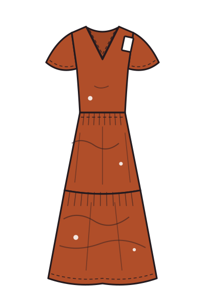

Retouch: before / after
BEFORE

AFTER
1. Remove wrinkles & lint
2. Match color to physical swatch
3. Clean background to #F7F4F0
4. Remove mannequin, rebuild neckline
5. Even hem & symmetry
6. Keep fabric texture, no plastic skin
Crop & spec
Ratio3:4 portrait
Size2400 × 3200 px
Background#F7F4F0
ColorsRGB, embedded
FormatJPG 85% · < 800 KB
NamingSTYLE_COLOR_VIEW.jpg
QC checklist before upload
- Color matches approved swatch under D65
- Same model pose set across all sizes
- Extended sizes shot on a model in that size
- No dust, lint, tags or pins visible
- Print scale correct for the grade
- Alt view set: front, back, side, detail
- File named and placed in DAM folder
- Approved by merch before go-live
Garments are illustrated for this guide. Studio photography follows the same rules.